Image-Based Models#
Content creators: Mahri
Chapter Overview
By the end of this module, learners should be able to:
Describe how digital images are represented as pixel arrays or tensors, including height, width, channels, and batch dimensions.
Differentiate image classification, object detection, and image segmentation, and connect each task to a healthcare use case.
Explain at a high level how convolutional neural networks (CNNs) learn spatial features and how transfer learning can reduce the amount of task-specific training data required.
Build and evaluate a basic image classifier using a small, public biomedical image dataset.
Critically assess image-based models for data leakage, class imbalance, shortcut learning, domain shift, interpretability limitations, and lack of clinical generalizability.
Educational use only
The model developed in this module is an educational example. It is not a diagnostic system and must not be used to make clinical decisions. PneumoniaMNIST contains low-resolution pediatric chest X-rays and does not represent the full diversity or complexity of clinical imaging.
Before You Begin#
This module assumes that you are comfortable with:
Basic Python and Jupyter notebooks
NumPy arrays and Matplotlib
Supervised learning, labels, and train/validation/test splits
Basic classification metrics
Neural-network concepts such as layers, activation functions, loss functions, and optimization
Practical example#
The guided coding example uses PneumoniaMNIST, a binary image-classification dataset from the MedMNIST collection. The dataset contains 5,856 standardized pediatric chest X-ray images divided into predefined training, validation, and test splits.
The workflow will:
Inspect the images, labels, dimensions, pixel values, and class balance.
Apply normalization and limited training-only augmentation.
Train a small CNN using PyTorch.
Evaluate the model using AUROC, sensitivity, specificity, precision, F1 score, and a confusion matrix.
Review false positives, false negatives, and a Grad-CAM heatmap.
End with a clinical-translation check.
Setup#
The following cell installs the packages used in the practical example. In Google Colab, run it once at the beginning of the session. In a local environment, you may prefer to install these packages using your usual environment manager.
Install the Required Packages#
Show code cell content
# Run once if the required packages are not already installed.
%pip install -q medmnist captum scikit-learn matplotlib pandas
Import Libraries and Configure the Environment#
Show code cell content
# Imports used throughout the module.
import random
import sys
from importlib.metadata import version, PackageNotFoundError
import numpy as np
import pandas as pd
import matplotlib.pyplot as plt
import torch
from torch import nn
from torch.utils.data import DataLoader
from torchvision import transforms
import medmnist
from medmnist import INFO
from sklearn.metrics import (
ConfusionMatrixDisplay,
RocCurveDisplay,
accuracy_score,
confusion_matrix,
f1_score,
precision_score,
roc_auc_score,
)
SEED = 21
random.seed(SEED)
np.random.seed(SEED)
torch.manual_seed(SEED)
if torch.cuda.is_available():
torch.cuda.manual_seed_all(SEED)
device = torch.device("cuda" if torch.cuda.is_available() else "cpu")
print(f"Using device: {device}")
---------------------------------------------------------------------------
ModuleNotFoundError Traceback (most recent call last)
Cell In[2], line 12
9 import matplotlib.pyplot as plt
11 import torch
---> 12 from torch import nn
13 from torch.utils.data import DataLoader
14 from torchvision import transforms
File ~\AppData\Local\Packages\PythonSoftwareFoundation.Python.3.8_qbz5n2kfra8p0\LocalCache\local-packages\Python38\site-packages\torch\nn\__init__.py:2
1 # mypy: allow-untyped-defs
----> 2 from .modules import * # noqa: F403
3 from .parameter import (
4 Parameter as Parameter,
5 UninitializedParameter as UninitializedParameter,
6 UninitializedBuffer as UninitializedBuffer,
7 )
8 from .parallel import DataParallel as DataParallel
File ~\AppData\Local\Packages\PythonSoftwareFoundation.Python.3.8_qbz5n2kfra8p0\LocalCache\local-packages\Python38\site-packages\torch\nn\modules\__init__.py:1
----> 1 from .module import Module
2 from .linear import Identity, Linear, Bilinear, LazyLinear
3 from .conv import Conv1d, Conv2d, Conv3d, \
4 ConvTranspose1d, ConvTranspose2d, ConvTranspose3d, \
5 LazyConv1d, LazyConv2d, LazyConv3d, LazyConvTranspose1d, LazyConvTranspose2d, LazyConvTranspose3d
File ~\AppData\Local\Packages\PythonSoftwareFoundation.Python.3.8_qbz5n2kfra8p0\LocalCache\local-packages\Python38\site-packages\torch\nn\modules\module.py:9
6 import weakref
8 import torch
----> 9 from torch._prims_common import DeviceLikeType
10 from ..parameter import Parameter
11 import torch.utils.hooks as hooks
ModuleNotFoundError: No module named 'torch._prims_common'
Record Package Versions#
Show code cell source
# Record package versions to support reproducibility.
packages = [
"python", "numpy", "pandas", "matplotlib",
"torch", "torchvision", "medmnist",
"scikit-learn", "captum"
]
for package in packages:
if package == "python":
package_version = sys.version.split()[0]
else:
try:
package_version = version(package)
except PackageNotFoundError:
package_version = "not installed"
print(f"{package:14s}: {package_version}")
python : 3.14.6
numpy : 2.5.1
pandas : 3.0.5
matplotlib : 3.11.1
torch : 2.13.0+cu126
torchvision : 0.28.0+cu126
medmnist : 3.0.2
scikit-learn : 1.9.0
captum : 0.9.0
1. What Makes Image Data Different?#
Images consist of spatially organized pixels. Neighbouring pixels are often related, and the location of a visual pattern within an image may be important.
A grayscale image can be represented as a two-dimensional array:
where \(H\) is the image height and \(W\) is the image width.
Deep-learning frameworks usually add a channel dimension:
For a grayscale image, \(C = 1\). For a standard red-green-blue, or RGB, image, \(C = 3\).
When multiple images are processed together, a batch dimension is added:
where \(N\) is the number of images in the batch.
Framework convention
PyTorch usually stores image batches in the order \(N \times C \times H \times W\).
Other frameworks may use \(N \times H \times W \times C\). Always inspect the tensor shape rather than assuming the dimension order.
Visualize an Image and Its Pixel Values#
Show code cell content
#| label: pixel-values-output
# Create a small synthetic grayscale image to connect pixel values,
# array dimensions, and displayed intensity.
example_image = np.array(
[
[0, 0, 0, 0, 0, 0],
[0, 40, 80, 80, 40, 0],
[0, 80, 180, 180, 80, 0],
[0, 80, 180, 255, 80, 0],
[0, 40, 80, 80, 40, 0],
[0, 0, 0, 0, 0, 0],
],
dtype=np.uint8,
)
fig, axes = plt.subplots(1, 2, figsize=(9, 4))
axes[0].imshow(example_image, cmap="gray", vmin=0, vmax=255)
axes[0].set_title("Displayed grayscale image")
axes[0].axis("off")
axes[1].imshow(example_image, cmap="gray", vmin=0, vmax=255)
for row in range(example_image.shape[0]):
for col in range(example_image.shape[1]):
axes[1].text(
col, row, str(example_image[row, col]),
ha="center", va="center", fontsize=8
)
axes[1].set_title("Underlying pixel values")
axes[1].set_xticks([])
axes[1].set_yticks([])
fig.tight_layout()
fig
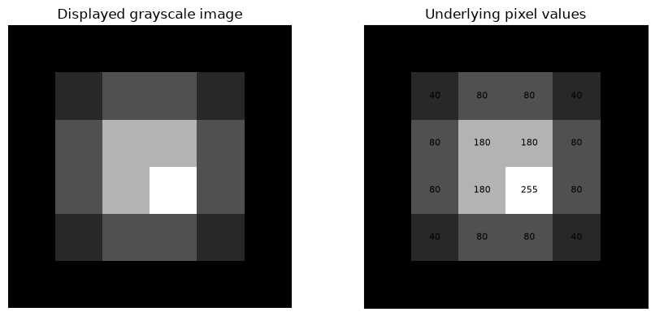
Pixel values may be stored using different data types and ranges. For example:
An 8-bit unsigned integer image commonly uses values from 0 to 255.
A floating-point image may use values from 0 to 1.
Medical images can use other ranges and may require modality-specific display settings.
The appearance of an image on screen does not fully describe the values stored in the image. This distinction matters when images are normalized, thresholded, or compared.
Convert an Image Array into a PyTorch Tensor#
Show code cell source
# Convert the 2D NumPy array into the channel-first format used by PyTorch.
image_tensor = torch.tensor(example_image, dtype=torch.float32).unsqueeze(0)
# Add a batch dimension.
image_batch = image_tensor.unsqueeze(0)
print("NumPy image shape: ", example_image.shape, " -> H x W")
print("PyTorch image shape:", tuple(image_tensor.shape), " -> C x H x W")
print("PyTorch batch shape:", tuple(image_batch.shape), "-> N x C x H x W")
NumPy image shape: (6, 6) -> H x W
PyTorch image shape: (1, 6, 6) -> C x H x W
PyTorch batch shape: (1, 1, 6, 6) -> N x C x H x W
Check your understanding
A PyTorch batch has shape (32, 1, 28, 28).
How many images are in the batch?
Are the images grayscale or RGB?
What are the image height and width?
Answer
There are 32 grayscale images. Each image is 28 pixels high and 28 pixels wide.
2. Common Image-Based Prediction Tasks#
Three common image-based tasks are classification, detection, and segmentation.
Task |
Input |
Model output |
Healthcare example |
|---|---|---|---|
Classification |
One image or image volume |
One or more labels |
Predict pneumonia versus normal from a chest X-ray |
Object detection |
One image |
Bounding boxes and class labels |
Locate nodules or lesions |
Segmentation |
One image or image volume |
Pixel- or voxel-level mask |
Outline a tumour or organ |
Deep learning has been applied to classification, detection, segmentation, and other tasks across a range of medical imaging modalities [Litjens et al., 2017].This module introduces all three tasks conceptually, but the practical example focuses on binary image classification.
Compare Classification, Detection, and Segmentation#
Show code cell content
#| label: image-tasks-output
# Generate a simplified conceptual comparison of classification,
# object detection, and segmentation outputs.
task_image = np.zeros((64, 64), dtype=float)
yy, xx = np.ogrid[:64, :64]
lesion_mask = (xx - 39) ** 2 + (yy - 29) ** 2 <= 9 ** 2
task_image += 0.15
task_image[lesion_mask] = 0.85
fig, axes = plt.subplots(1, 3, figsize=(12, 4))
axes[0].imshow(task_image, cmap="gray", vmin=0, vmax=1)
axes[0].set_title("Classification\nLabel: lesion present")
axes[0].axis("off")
axes[1].imshow(task_image, cmap="gray", vmin=0, vmax=1)
rectangle = plt.Rectangle((30, 20), 18, 18, fill=False, linewidth=2)
axes[1].add_patch(rectangle)
axes[1].set_title("Detection of lesion\nBounding box + label")
axes[1].axis("off")
axes[2].imshow(task_image, cmap="gray", vmin=0, vmax=1)
axes[2].imshow(np.ma.masked_where(~lesion_mask, lesion_mask), alpha=0.45)
axes[2].set_title("Segmentation of lesion\nPixel-level mask")
axes[2].axis("off")
fig.tight_layout()
fig
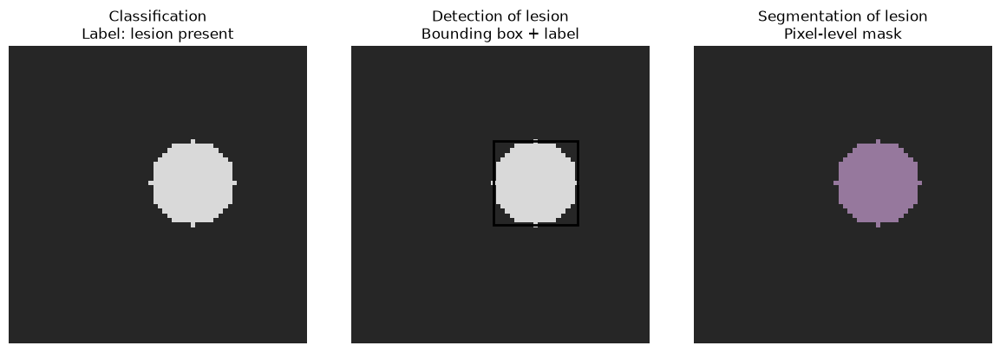
Important distinction
A classification model may predict that an abnormality is present, but it does not necessarily identify where the abnormality is. A heatmap generated after classification is not equivalent to a detection box or a validated segmentation mask.
3. Preparing Images for a Model#
Common preprocessing steps include:
Resizing: changing the spatial dimensions of an image
Cropping: selecting part of an image
Normalization: transforming pixel values to a consistent scale
Augmentation: introducing realistic training-time variation
Batching: grouping images for efficient computation
Data loading: reading and transforming data during training
Preprocessing is not neutral. A transformation may remove clinically important detail, create unrealistic anatomy, or alter laterality. The appropriate choices depend on the modality, anatomy, acquisition process, and intended task.
Preventing data leakage
Learn preprocessing parameters from the training set only. Keep patient-related images in the same split. Augmentation should be applied only to training data, not validation or test data.
3.1 Load PneumoniaMNIST#
PneumoniaMNIST is one of the standardized biomedical image-classification datasets included in MedMNIST v2 [Yang et al., 2023]. It was constructed from the pediatric chest X-ray dataset reported by Kermany et al. [Kermany et al., 2018].
PneumoniaMNIST includes predefined training, validation, and test splits. The version used in this module contains grayscale images standardized to a resolution of \(28 \times 28\) pixels.
This low resolution makes the dataset computationally accessible for teaching and benchmarking, but it also removes much of the detail available in the original clinical chest X-rays.
Review the PneumoniaMNIST Dataset Information#
Show code cell source
DATA_FLAG = "pneumoniamnist"
DOWNLOAD = True
info = INFO[DATA_FLAG]
DataClass = getattr(medmnist, info["python_class"])
print("Task: ", info["task"])
print("Number channels:", info["n_channels"])
print("Labels: ", info["label"])
print("Description: ", info["description"])
Task: binary-class
Number channels: 1
Labels: {'0': 'normal', '1': 'pneumonia'}
Description: The PneumoniaMNIST is based on a prior dataset of 5,856 pediatric chest X-Ray images. The task is binary-class classification of pneumonia against normal. We split the source training set with a ratio of 9:1 into training and validation set and use its source validation set as the test set. The source images are gray-scale, and their sizes are (384−2,916)×(127−2,713). We center-crop the images and resize them into 1×28×28.
Load the Training, Validation, and Test Sets#
Show code cell source
# Load raw datasets first so that we can inspect their original arrays.
raw_train_dataset = DataClass(split="train", download=DOWNLOAD)
raw_val_dataset = DataClass(split="val", download=DOWNLOAD)
raw_test_dataset = DataClass(split="test", download=DOWNLOAD)
split_summary = pd.DataFrame(
{
"Split": ["Training", "Validation", "Test"],
"Number of images": [
len(raw_train_dataset),
len(raw_val_dataset),
len(raw_test_dataset),
],
}
)
split_summary
| Split | Number of images | |
|---|---|---|
| 0 | Training | 4708 |
| 1 | Validation | 524 |
| 2 | Test | 624 |
3.2 Inspect image dimensions and pixel values#
Before training, inspect the dataset rather than assuming that the input has the expected format.
Inspect Image Dimensions and Pixel Values#
Show code cell source
sample_image, sample_label = raw_train_dataset[0]
sample_array = np.asarray(sample_image)
print("Image type: ", type(sample_image))
print("Image array shape:", sample_array.shape)
print("Image data type: ", sample_array.dtype)
print("Minimum value: ", sample_array.min())
print("Maximum value: ", sample_array.max())
print("Raw label: ", sample_label)
Image type: <class 'PIL.Image.Image'>
Image array shape: (28, 28)
Image data type: uint8
Minimum value: 0
Maximum value: 225
Raw label: [1]
Visualize Examples from Each Class#
Show code cell content
#| label: pneumoniamnist-examples-output
# Display representative images from each class.
label_map = {int(key): value for key, value in info["label"].items()}
train_labels_raw = raw_train_dataset.labels.squeeze().astype(int)
fig, axes = plt.subplots(2, 6, figsize=(12, 5))
for class_id, axis_row in zip(sorted(label_map), axes):
class_indices = np.where(train_labels_raw == class_id)[0][:6]
for ax, idx in zip(axis_row, class_indices):
image, label = raw_train_dataset[int(idx)]
ax.imshow(image, cmap="gray")
ax.set_title(label_map[int(np.asarray(label).squeeze())])
ax.axis("off")
fig.suptitle("Representative PneumoniaMNIST training images")
fig.tight_layout()
fig
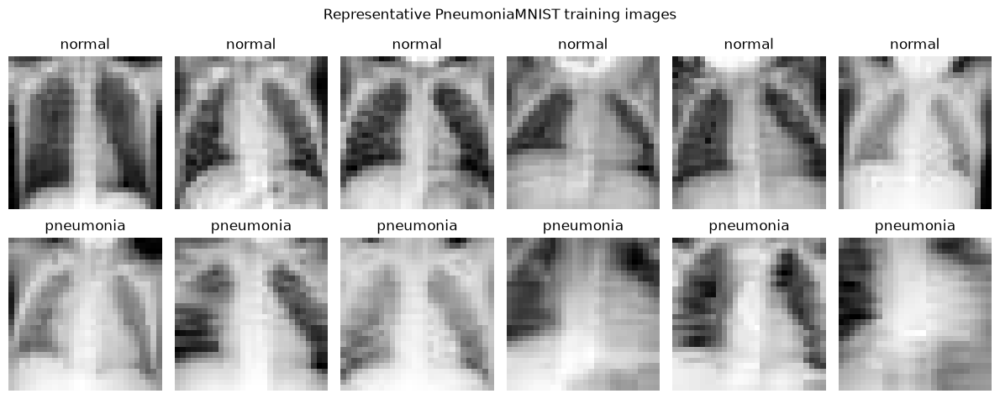
At a resolution of \(28 \times 28\) pixels, these images contain substantially less detail than the original clinical chest X-rays. Therefore, strong performance on this benchmark should not be interpreted as evidence that the model is ready for clinical use.
3.3 Examine class balance#
Class imbalance can make accuracy misleading. For example, a model can appear accurate by frequently predicting the more common class.
Summarize the Training-Set Class Distribution#
Show code cell source
class_counts = (
pd.Series(train_labels_raw)
.value_counts()
.sort_index()
.rename(index=label_map)
.rename("Count")
.to_frame()
)
class_counts["Percentage"] = 100 * class_counts["Count"] / class_counts["Count"].sum()
class_counts
| Count | Percentage | |
|---|---|---|
| normal | 1214 | 25.785896 |
| pneumonia | 3494 | 74.214104 |
Visualize the Training-Set Class Balance#
Show code cell content
#| label: class-balance-output
fig, ax = plt.subplots(figsize=(6, 4))
class_counts["Count"].plot(kind="bar", ax=ax)
ax.set_title("Training-set class balance")
ax.set_xlabel("Class")
ax.set_ylabel("Number of images")
ax.tick_params(axis="x", rotation=0)
fig.tight_layout()
fig
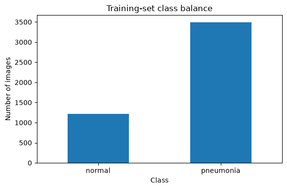
3.4 Define training and evaluation transformations#
The training transformation below uses a small random rotation as a limited example of augmentation. It intentionally avoids horizontal flipping because laterality can be clinically meaningful in chest imaging.
Even a small rotation is not automatically appropriate for every medical-imaging task. Augmentations should reflect plausible acquisition or patient-position variation.
Define Image Transformations and Normalization#
Show code cell source
# Estimate normalization values using the training split only.
train_pixels = raw_train_dataset.imgs.astype(np.float32) / 255.0
train_mean = float(train_pixels.mean())
train_std = float(train_pixels.std())
print(f"Training mean: {train_mean:.4f}")
print(f"Training standard deviation: {train_std:.4f}")
train_transform = transforms.Compose(
[
transforms.RandomRotation(degrees=5),
transforms.ToTensor(),
transforms.Normalize(mean=[train_mean], std=[train_std]),
]
)
evaluation_transform = transforms.Compose(
[
transforms.ToTensor(),
transforms.Normalize(mean=[train_mean], std=[train_std]),
]
)
train_dataset = DataClass(split="train", transform=train_transform, download=DOWNLOAD)
val_dataset = DataClass(split="val", transform=evaluation_transform, download=DOWNLOAD)
test_dataset = DataClass(split="test", transform=evaluation_transform, download=DOWNLOAD)
transformed_image, transformed_label = train_dataset[0]
print("Transformed image shape:", tuple(transformed_image.shape))
print("Transformed image dtype:", transformed_image.dtype)
print("Transformed label: ", transformed_label)
Training mean: 0.5719
Training standard deviation: 0.1684
Transformed image shape: (1, 28, 28)
Transformed image dtype: torch.float32
Transformed label: [1]
Reflection
What could go wrong if random augmentation were also applied to the validation and test sets?
Suggested response
Evaluation would become variable and would no longer measure performance on a fixed held-out dataset. Some transformations could also make the evaluation examples unrealistic or change clinically meaningful information.
4. How Convolutional Neural Networks Work#
A fully connected layer treats each input value as a separate feature. In contrast, a convolutional layer applies a small, learnable filter to local regions of an image. Early convolutional neural networks demonstrated how local connectivity and shared weights could support image recognition [Lecun et al., 1998]. Later work showed that deeper CNNs trained on large image datasets could achieve major improvements in image-classification performance [Krizhevsky et al., 2012]. This provides three important properties:
Local connectivity: Each feature is computed from a local neighbourhood of pixels.
Weight sharing: The same filter is applied across multiple spatial locations.
Preservation of spatial structure: The resulting feature map retains information about where a pattern was detected.
A simplified two-dimensional convolution-like operation can be written as:
where \(X\) is the input image, \(K\) is the kernel or filter, \(b\) is the bias term, and \(Z\) is the resulting feature map.
Convolution or cross-correlation?
Strictly speaking, most deep-learning libraries perform cross-correlation when they refer to convolution because the kernel is applied without being flipped. This distinction does not change the main learning concept in this module because the kernel values are learned during training.
Apply Example Kernels to an Image#
Show code cell content
#| label: fixed-kernels-output
# Apply fixed kernels to a synthetic image to illustrate how local filters
# can produce different feature maps. In a CNN, kernel values are learned.
import torch.nn.functional as F
synthetic = torch.zeros((1, 1, 32, 32), dtype=torch.float32)
synthetic[:, :, 8:24, 10:22] = 1.0
vertical_edge_kernel = torch.tensor(
[[[-1.0, 0.0, 1.0],
[-1.0, 0.0, 1.0],
[-1.0, 0.0, 1.0]]]
).unsqueeze(0)
blur_kernel = torch.ones((1, 1, 3, 3), dtype=torch.float32) / 9.0
vertical_features = F.conv2d(synthetic, vertical_edge_kernel, padding=1)
blurred_features = F.conv2d(synthetic, blur_kernel, padding=1)
fig, axes = plt.subplots(1, 3, figsize=(11, 3.5))
axes[0].imshow(synthetic.squeeze(), cmap="gray")
axes[0].set_title("Input image")
axes[1].imshow(vertical_features.squeeze(), cmap="gray")
axes[1].set_title("Vertical-edge response")
axes[2].imshow(blurred_features.squeeze(), cmap="gray")
axes[2].set_title("Local averaging response")
for ax in axes:
ax.axis("off")
fig.tight_layout()
fig
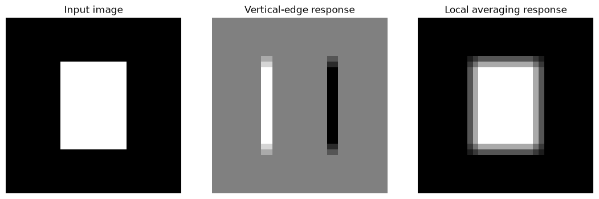
After convolution, CNNs commonly use:
A nonlinear activation function, such as ReLU, which allows the network to represent nonlinear relationships.
Pooling or strided convolution to reduce the spatial dimensions of the feature maps.
Multiple layers that learn progressively more complex representations.
A final prediction layer that converts the learned features into logits or probabilities.
The spatial output size of a convolutional layer can be calculated as:
where \(P\) is the padding size, \(K\) is the kernel size, and \(S\) is the stride.
Calculate the Convolutional Output Size#
Show code cell source
def convolution_output_size(input_size, kernel_size, stride=1, padding=0):
"""Calculate one spatial output dimension for a convolutional layer."""
return ((input_size + 2 * padding - kernel_size) // stride) + 1
print(
"28x28 input, 3x3 kernel, stride 1, padding 1 ->",
convolution_output_size(28, 3, stride=1, padding=1),
)
print(
"28x28 input, 3x3 kernel, stride 2, padding 1 ->",
convolution_output_size(28, 3, stride=2, padding=1),
)
28x28 input, 3x3 kernel, stride 1, padding 1 -> 28
28x28 input, 3x3 kernel, stride 2, padding 1 -> 14
Open visualization resources
CNN Explainer provides an interactive visualization of convolution, activation, pooling, and learned feature maps.
Convolution Arithmetic provides openly licensed animations of padding, stride, dilation, and transposed convolution.
Dive into Deep Learning: Convolutional Neural Networks provides equations, explanations, and executable examples.
5. Modern Image Model Families#
This module uses a small CNN because its components can be inspected directly. Current image-based systems may use several model families.
Model family |
Main idea |
Potential strength |
Important limitation |
|---|---|---|---|
CNN |
Learn local filters using convolution |
Efficient spatial feature learning |
May learn shortcuts and may not generalize across sites |
Residual network (ResNet) |
Add skip connections to support deeper networks |
Strong, widely used baseline |
More complex than a small teaching CNN |
Vision transformer (ViT) |
Represent an image as patches and use attention |
Can model long-range relationships |
Often data- and compute-intensive |
Image foundation model |
Pretrain on large and potentially diverse image collections |
Can be adapted to many downstream tasks |
Provenance, bias, validation, and deployment concerns remain |
Residual networks introduced skip connections that allow information and gradients to pass more directly through deep networks, making substantially deeper CNN architectures easier to train [He et al., 2016]. Architecture choice does not replace careful dataset design, evaluation, and clinical validation.
6. Transfer Learning#
Transfer learning begins with a model that was pretrained on another dataset. The model can then be adapted to a new task by replacing the final prediction layer and either:
Freezing the pretrained feature extractor and training only the new prediction layer, or
Fine-tuning some or all pretrained layers using the new dataset.
Transfer learning can reduce the amount of task-specific data and training time required. However, features learned from natural images may not transfer perfectly to medical images, and successful internal evaluation does not establish clinical validity.
The official PyTorch transfer-learning tutorial provides a complete implementation.
7. Guided PneumoniaMNIST Classification Workflow#
We will now train a small CNN for binary classification.
7.1 Create data loaders#
A data loader groups examples into mini-batches and optionally shuffles their order. The validation and test loaders are not shuffled so that predictions remain aligned with dataset indices.
Create the Data Loaders#
Show code cell source
BATCH_SIZE = 64
NUM_WORKERS = 0 # Portable across Jupyter, Colab, Windows, and macOS.
train_loader = DataLoader(
train_dataset,
batch_size=BATCH_SIZE,
shuffle=True,
num_workers=NUM_WORKERS,
)
val_loader = DataLoader(
val_dataset,
batch_size=BATCH_SIZE,
shuffle=False,
num_workers=NUM_WORKERS,
)
test_loader = DataLoader(
test_dataset,
batch_size=BATCH_SIZE,
shuffle=False,
num_workers=NUM_WORKERS,
)
images, labels = next(iter(train_loader))
print("Image batch shape:", tuple(images.shape))
print("Label batch shape:", tuple(labels.shape))
Image batch shape: (64, 1, 28, 28)
Label batch shape: (64, 1)
7.2 Define a small CNN#
The model contains three convolutional layers followed by global average pooling and a single output logit.
The model returns a logit, not a probability. A sigmoid function converts the logit to a probability during evaluation.
Define the Convolutional Neural Network#
Show code cell source
class SmallCNN(nn.Module):
"""A compact CNN for 28x28 grayscale image classification."""
def __init__(self):
super().__init__()
self.features = nn.Sequential(
nn.Conv2d(1, 16, kernel_size=3, padding=1),
nn.ReLU(),
nn.MaxPool2d(kernel_size=2), # 28x28 -> 14x14
nn.Conv2d(16, 32, kernel_size=3, padding=1),
nn.ReLU(),
nn.MaxPool2d(kernel_size=2), # 14x14 -> 7x7
nn.Conv2d(32, 64, kernel_size=3, padding=1),
nn.ReLU(),
nn.AdaptiveAvgPool2d((1, 1)), # 7x7 -> 1x1
)
self.classifier = nn.Linear(64, 1)
def forward(self, x):
x = self.features(x)
x = torch.flatten(x, start_dim=1)
return self.classifier(x).squeeze(1)
model = SmallCNN().to(device)
model
SmallCNN(
(features): Sequential(
(0): Conv2d(1, 16, kernel_size=(3, 3), stride=(1, 1), padding=(1, 1))
(1): ReLU()
(2): MaxPool2d(kernel_size=2, stride=2, padding=0, dilation=1, ceil_mode=False)
(3): Conv2d(16, 32, kernel_size=(3, 3), stride=(1, 1), padding=(1, 1))
(4): ReLU()
(5): MaxPool2d(kernel_size=2, stride=2, padding=0, dilation=1, ceil_mode=False)
(6): Conv2d(32, 64, kernel_size=(3, 3), stride=(1, 1), padding=(1, 1))
(7): ReLU()
(8): AdaptiveAvgPool2d(output_size=(1, 1))
)
(classifier): Linear(in_features=64, out_features=1, bias=True)
)
Verify the Model Output Shape#
Show code cell source
# Verify that the model returns one logit per image.
with torch.no_grad():
example_logits = model(images[:4].to(device))
print("Input shape: ", tuple(images[:4].shape))
print("Output shape:", tuple(example_logits.shape))
print("Logits: ", example_logits.cpu().numpy())
Input shape: (4, 1, 28, 28)
Output shape: (4,)
Logits: [0.0680497 0.06548157 0.07516152 0.07773104]
7.3 Select the Loss Function and Optimizer#
For binary classification, the model is trained using binary cross-entropy. The loss for one example is:
where \(y \in {0,1}\) is the true binary label and \(p\) is the predicted probability of the positive class.
In the implementation, the model produces an unbounded output called a logit, rather than a probability. PyTorch’s BCEWithLogitsLoss combines the sigmoid transformation and binary cross-entropy in a single, numerically stable function.
Why use BCEWithLogitsLoss?
Do not apply a sigmoid function to the model output before passing it to BCEWithLogitsLoss. The loss function applies the required transformation internally.
The sigmoid function is applied later when converting logits into probabilities for evaluation or interpretation.
Define the Loss Function and Optimizer#
Show code cell source
negative_count = int((train_labels_raw == 0).sum())
positive_count = int((train_labels_raw == 1).sum())
positive_weight = negative_count / positive_count
criterion = nn.BCEWithLogitsLoss(
pos_weight=torch.tensor(
positive_weight,
dtype=torch.float32,
device=device,
)
)
optimizer = torch.optim.Adam(model.parameters(), lr=1e-3)
print(f"Negative examples: {negative_count}")
print(f"Positive examples: {positive_count}")
print(f"Positive-class weight: {positive_weight:.3f}")
Negative examples: 1214
Positive examples: 3494
Positive-class weight: 0.347
7.4 Train the model#
The training loop records training and validation loss after each epoch. Five epochs are used to keep the example manageable on a standard laptop or Colab. Results can vary across hardware and software versions even when a random seed is set.
Define the Training and Validation Functions#
Show code cell source
def run_training_epoch(model, data_loader, criterion, optimizer, device):
"""Train for one epoch and return the mean loss."""
model.train()
running_loss = 0.0
number_examples = 0
for batch_images, batch_labels in data_loader:
batch_images = batch_images.to(device)
batch_labels = batch_labels.squeeze(1).float().to(device)
optimizer.zero_grad()
logits = model(batch_images)
loss = criterion(logits, batch_labels)
loss.backward()
optimizer.step()
batch_size = batch_images.size(0)
running_loss += loss.item() * batch_size
number_examples += batch_size
return running_loss / number_examples
def calculate_validation_loss(model, data_loader, criterion, device):
"""Evaluate mean loss without updating model parameters."""
model.eval()
running_loss = 0.0
number_examples = 0
with torch.no_grad():
for batch_images, batch_labels in data_loader:
batch_images = batch_images.to(device)
batch_labels = batch_labels.squeeze(1).float().to(device)
logits = model(batch_images)
loss = criterion(logits, batch_labels)
batch_size = batch_images.size(0)
running_loss += loss.item() * batch_size
number_examples += batch_size
return running_loss / number_examples
Train the Convolutional Neural Network#
Show code cell source
NUM_EPOCHS = 10
history = {
"training_loss": [],
"validation_loss": [],
}
for epoch in range(1, NUM_EPOCHS + 1):
training_loss = run_training_epoch(
model, train_loader, criterion, optimizer, device
)
validation_loss = calculate_validation_loss(
model, val_loader, criterion, device
)
history["training_loss"].append(training_loss)
history["validation_loss"].append(validation_loss)
print(
f"Epoch {epoch}/{NUM_EPOCHS} | "
f"training loss: {training_loss:.4f} | "
f"validation loss: {validation_loss:.4f}"
)
Epoch 1/10 | training loss: 0.2888 | validation loss: 0.2028
Epoch 2/10 | training loss: 0.1668 | validation loss: 0.1561
Epoch 3/10 | training loss: 0.1443 | validation loss: 0.1375
Epoch 4/10 | training loss: 0.1257 | validation loss: 0.1221
Epoch 5/10 | training loss: 0.1220 | validation loss: 0.1146
Epoch 6/10 | training loss: 0.1219 | validation loss: 0.1432
Epoch 7/10 | training loss: 0.1050 | validation loss: 0.1389
Epoch 8/10 | training loss: 0.0954 | validation loss: 0.1446
Epoch 9/10 | training loss: 0.0939 | validation loss: 0.1086
Epoch 10/10 | training loss: 0.0902 | validation loss: 0.0958
7.5 Review training and validation loss#
Training loss describes how well the model fits examples used to update its parameters. Validation loss estimates performance on held-out examples during model development.
A widening gap in which training loss continues to improve while validation loss worsens can indicate overfitting. Loss curves are useful, but they do not replace evaluation using clinically relevant metrics.
Visualize Training and Validation Loss#
Show code cell content
#| label: training-curves-output
epochs = np.arange(1, NUM_EPOCHS + 1)
fig, ax = plt.subplots(figsize=(7, 4.5))
ax.plot(epochs, history["training_loss"], marker="o", label="Training loss")
ax.plot(epochs, history["validation_loss"], marker="o", label="Validation loss")
ax.set_xlabel("Epoch")
ax.set_ylabel("Binary cross-entropy loss")
ax.set_title("Training and validation loss")
ax.set_xticks(epochs)
ax.legend()
fig.tight_layout()
fig
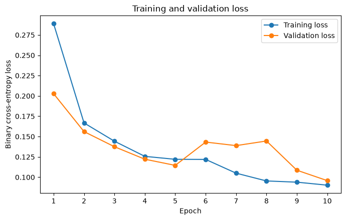
Reflection
Do the curves suggest underfitting, a reasonable fit, or possible overfitting? What additional evidence would you need before deciding?
Suggested response
Look at whether both losses remain high, decrease together, or diverge. The interpretation should also consider validation metrics, repeated runs, learning curves, and whether the validation split represents the intended population.
8. Evaluating an Image Classifier in Healthcare#
Accuracy alone is often insufficient for evaluating healthcare classifiers, especially when the classes are imbalanced or different types of errors have different clinical consequences.
For a positive class such as pneumonia, sensitivity is calculated as:
Specificity is calculated as:
where \(TP\) represents true positives, \(FN\) represents false negatives, \(TN\) represents true negatives, and \(FP\) represents false positives.
Sensitivity is the proportion of positive cases that the model correctly identifies.
Specificity is the proportion of negative cases that the model correctly identifies.
Why accuracy may be misleading
A model can achieve high accuracy by predicting the majority class most of the time. For example, if pneumonia cases are uncommon, a model may appear accurate while still missing many patients with pneumonia. Sensitivity, specificity, precision, and the confusion matrix provide more information about the types of errors the model makes.
Generate Predictions for the Test Set#
Show code cell source
def collect_predictions(model, data_loader, device):
"""Collect labels, logits, and probabilities in loader order."""
model.eval()
all_labels = []
all_logits = []
with torch.no_grad():
for batch_images, batch_labels in data_loader:
batch_images = batch_images.to(device)
logits = model(batch_images)
all_logits.append(logits.cpu())
all_labels.append(batch_labels.squeeze(1).cpu())
labels = torch.cat(all_labels).numpy().astype(int)
logits = torch.cat(all_logits).numpy()
probabilities = 1.0 / (1.0 + np.exp(-logits))
return labels, logits, probabilities
test_labels, test_logits, test_probabilities = collect_predictions(
model, test_loader, device
)
print("Number of test predictions:", len(test_probabilities))
print(
"Probability range:",
f"{test_probabilities.min():.3f} to {test_probabilities.max():.3f}",
)
Number of test predictions: 624
Probability range: 0.000 to 1.000
Calculate Classification Performance Metrics#
Show code cell source
def binary_classification_metrics(labels, probabilities, threshold=0.5):
"""Calculate threshold-dependent and threshold-independent metrics."""
predictions = (probabilities >= threshold).astype(int)
tn, fp, fn, tp = confusion_matrix(
labels, predictions, labels=[0, 1]
).ravel()
sensitivity = tp / (tp + fn) if (tp + fn) else np.nan
specificity = tn / (tn + fp) if (tn + fp) else np.nan
return {
"Threshold": threshold,
"Accuracy": accuracy_score(labels, predictions),
"AUROC": roc_auc_score(labels, probabilities),
"Sensitivity": sensitivity,
"Specificity": specificity,
"Precision": precision_score(labels, predictions, zero_division=0),
"F1 score": f1_score(labels, predictions, zero_division=0),
"True negatives": tn,
"False positives": fp,
"False negatives": fn,
"True positives": tp,
}
metrics_at_05 = binary_classification_metrics(
test_labels, test_probabilities, threshold=0.5
)
pd.DataFrame([metrics_at_05]).round(3)
| Threshold | Accuracy | AUROC | Sensitivity | Specificity | Precision | F1 score | True negatives | False positives | False negatives | True positives | |
|---|---|---|---|---|---|---|---|---|---|---|---|
| 0 | 0.5 | 0.894 | 0.951 | 0.944 | 0.812 | 0.893 | 0.918 | 190 | 44 | 22 | 368 |
Interpretation
These numbers describe performance on the predefined PneumoniaMNIST test split only. They do not establish performance in another hospital, device, age group, disease spectrum, or clinical workflow.
Visualize the Confusion Matrix#
Show code cell content
#| label: confusion-matrix-output
test_predictions = (test_probabilities >= 0.5).astype(int)
cm = confusion_matrix(test_labels, test_predictions, labels=[0, 1])
fig, ax = plt.subplots(figsize=(5.5, 5))
ConfusionMatrixDisplay(
confusion_matrix=cm,
display_labels=[label_map[0], label_map[1]],
).plot(ax=ax, cmap="Blues", colorbar=False)
ax.set_title("Test-set confusion matrix at threshold 0.5")
fig.tight_layout()
fig
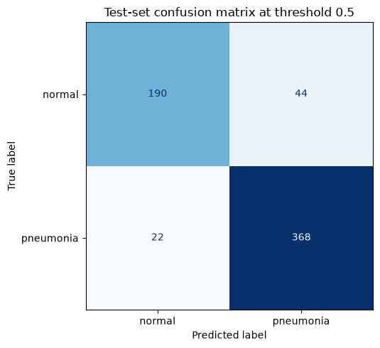
Visualize the Receiver Operating Characteristic Curve#
Show code cell content
#| label: roc-curve-output
fig, ax = plt.subplots(figsize=(6, 5))
RocCurveDisplay.from_predictions(
test_labels,
test_probabilities,
name="Small CNN",
ax=ax,
)
ax.plot([0, 1], [0, 1], linestyle="--", label="Chance")
ax.set_title("Test-set ROC curve")
ax.legend()
fig.tight_layout()
fig
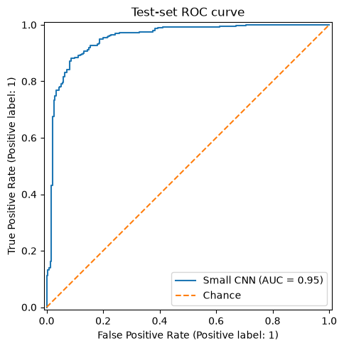
8.1 Examine the decision threshold#
The predicted probability must be converted into a class decision using a threshold. Changing the threshold changes the balance between sensitivity and specificity.
Examine Sensitivity and Specificity Across Thresholds#
Show code cell content
#| label: threshold-tradeoff-output
threshold_rows = []
for threshold in np.linspace(0.05, 0.95, 19):
threshold_rows.append(
binary_classification_metrics(
test_labels,
test_probabilities,
threshold=float(threshold),
)
)
threshold_results = pd.DataFrame(threshold_rows)
fig, ax = plt.subplots(figsize=(7, 4.5))
ax.plot(
threshold_results["Threshold"],
threshold_results["Sensitivity"],
marker="o",
label="Sensitivity",
)
ax.plot(
threshold_results["Threshold"],
threshold_results["Specificity"],
marker="o",
label="Specificity",
)
ax.set_xlabel("Probability threshold")
ax.set_ylabel("Metric value")
ax.set_ylim(0, 1.05)
ax.set_title("Sensitivity and specificity across thresholds")
ax.legend()
fig.tight_layout()
fig
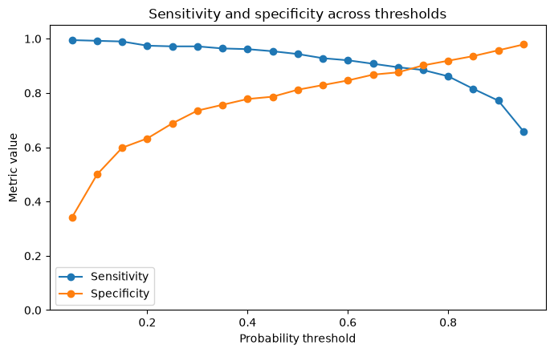
Check your understanding
Why should the threshold not be selected by looking at the test set repeatedly?
Answer
Repeatedly selecting a threshold based on test performance leaks information from the test set into model development. The threshold should be selected using validation data and justified using the intended clinical context. The untouched test set should be used for final evaluation.
8.2 Review false positives and false negatives#
Aggregate metrics can hide recurring error patterns. Reviewing individual errors can reveal artefacts, low-quality images, unusual anatomy, or systematic model failures.
The following examples are shown for educational inspection only. They do not establish why the model made each prediction.
Define Helper Functions for Reviewing Classification Errors#
Show code cell content
def denormalize_image(image_tensor, mean, std):
"""Convert a normalized 1-channel tensor back to the 0-1 display range."""
image = image_tensor.squeeze(0).numpy() * std + mean
return np.clip(image, 0, 1)
def show_error_examples(
dataset,
labels,
probabilities,
error_type,
mean,
std,
max_examples=6,
):
"""Display false-positive or false-negative examples."""
predictions = (probabilities >= 0.5).astype(int)
if error_type == "false_positive":
indices = np.where((labels == 0) & (predictions == 1))[0]
heading = "False positives"
elif error_type == "false_negative":
indices = np.where((labels == 1) & (predictions == 0))[0]
heading = "False negatives"
else:
raise ValueError(
"error_type must be 'false_positive' or 'false_negative'."
)
indices = indices[:max_examples]
if len(indices) == 0:
print(f"No {heading.lower()} occurred at threshold 0.5.")
return
fig, axes = plt.subplots(
1, len(indices), figsize=(2.4 * len(indices), 2.8)
)
if len(indices) == 1:
axes = [axes]
for ax, idx in zip(axes, indices):
image, _ = dataset[int(idx)]
image_for_display = denormalize_image(image, mean, std)
ax.imshow(image_for_display, cmap="gray", vmin=0, vmax=1)
ax.set_title(
f"True: {label_map[int(labels[idx])]}\n"
f"P(pneumonia): {probabilities[idx]:.2f}",
fontsize=9,
)
ax.axis("off")
fig.suptitle(heading)
fig.tight_layout()
return fig
Review False-Positive Predictions#
Show code cell content
#| label: false-positive-predictions-output
fig = show_error_examples(
test_dataset,
test_labels,
test_probabilities,
error_type="false_positive",
mean=train_mean,
std=train_std,
)
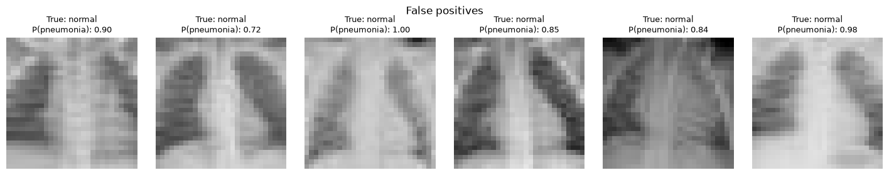
Review False-Negative Predictions#
Show code cell content
#| label: false-negative-predictions-output
fig = show_error_examples(
test_dataset,
test_labels,
test_probabilities,
error_type="false_negative",
mean=train_mean,
std=train_std,
)
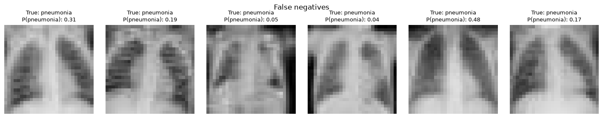
Reflection
Which error would be more consequential in the intended setting: a false positive or a false negative? There is no universal answer. Describe the intended use, who acts on the result, and what happens after each type of error.
9. Interpretation and Grad-CAM#
Grad-CAM uses gradients flowing into a convolutional layer to produce a coarse, class-specific localization map associated with a model output [Selvaraju et al., 2016]. It can be useful for exploratory interpretation and error analysis.
However, a Grad-CAM heatmap:
Is not a validated segmentation mask
May be unstable across models or settings
Can highlight a region without proving clinically valid reasoning
Does not rule out shortcut learning or confounding
Should not be treated as an explanation of causal reasoning
The code below uses Captum to generate a Grad-CAM map for one test image.
Generate and Visualize a Grad-CAM Heatmap#
Show code cell content
#| label: gradcam-output
from captum.attr import LayerAttribution, LayerGradCam
def make_gradcam(model, image, target_layer, device):
"""Generate an upsampled Grad-CAM map for the model's positive logit."""
model.eval()
input_batch = image.unsqueeze(0).to(device)
gradcam = LayerGradCam(model, target_layer)
attribution = gradcam.attribute(input_batch)
attribution = LayerAttribution.interpolate(
attribution,
interpolate_dims=image.shape[-2:],
interpolate_mode="bilinear",
)
heatmap = torch.relu(attribution).squeeze().detach().cpu().numpy()
if heatmap.max() > heatmap.min():
heatmap = (
(heatmap - heatmap.min())
/ (heatmap.max() - heatmap.min())
)
else:
heatmap = np.zeros_like(heatmap)
with torch.no_grad():
probability = torch.sigmoid(model(input_batch)).item()
return heatmap, probability
# Select the test image with the highest predicted pneumonia probability.
gradcam_index = int(np.argmax(test_probabilities))
gradcam_image, gradcam_label = test_dataset[gradcam_index]
heatmap, gradcam_probability = make_gradcam(
model,
gradcam_image,
target_layer=model.features[6],
device=device,
)
display_image = denormalize_image(
gradcam_image, train_mean, train_std
)
fig, axes = plt.subplots(1, 3, figsize=(10, 3.5))
axes[0].imshow(display_image, cmap="gray", vmin=0, vmax=1)
axes[0].set_title("Original image")
axes[1].imshow(heatmap, cmap="inferno")
axes[1].set_title("Grad-CAM heatmap")
axes[2].imshow(display_image, cmap="gray", vmin=0, vmax=1)
axes[2].imshow(heatmap, cmap="inferno", alpha=0.45)
axes[2].set_title("Overlay")
for ax in axes:
ax.axis("off")
true_label = label_map[int(np.asarray(gradcam_label).squeeze())]
fig.suptitle(
f"True label: {true_label} | "
f"Predicted P(pneumonia): {gradcam_probability:.2f}"
)
fig.tight_layout()
fig
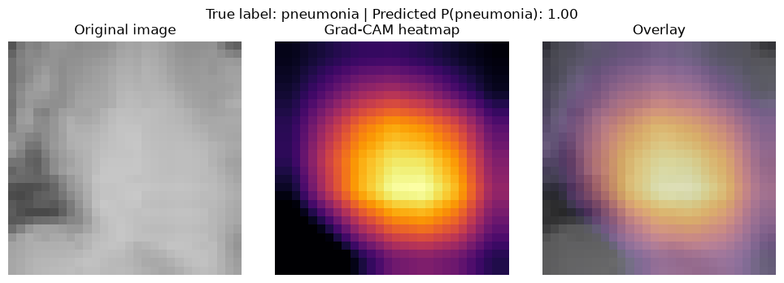
10. Failure Modes and Clinical Generalizability#
Image-based models can perform well on an internal benchmark and still fail in clinical use.A model may learn shortcuts—patterns that are predictive within the development dataset but do not represent the intended clinical features [Geirhos et al., 2020].
In chest radiography, pneumonia-detection performance has been shown to vary across institutions, demonstrating that strong internal performance may not transfer to different hospitals, populations, or acquisition environments [Zech et al., 2018].
Risk |
What it can look like |
Mitigation or evaluation question |
|---|---|---|
Data leakage |
Images from the same patient appear in multiple splits |
Were splits created at the patient level before model development? |
Class imbalance |
High accuracy but poor performance for one class |
Are class-specific metrics and precision-recall behaviour reported? |
Shortcut learning |
The model relies on text markers, borders, devices, or acquisition patterns |
Were artefacts and confounders examined? |
Domain shift |
Performance drops at another hospital or with another scanner |
Was the model externally validated across sites and populations? |
Interpretability limitations |
A plausible heatmap is treated as proof of correct reasoning |
Were interpretation methods stress-tested and used cautiously? |
Poor calibration |
Predicted probabilities do not match observed frequencies |
Was calibration assessed on relevant held-out data? |
Limited clinical validity |
Benchmark performance is mistaken for patient benefit |
Was the intended use evaluated prospectively in a clinical workflow? |
The PneumoniaMNIST example is especially limited because it uses low-resolution images from a pediatric source population. The notebook demonstrates a machine-learning workflow, not a clinically validated diagnostic pathway.
Clinical-translation check#
Before interpreting an image-model result, ask:
Population: Who contributed the data? Who is missing?
Provenance: How were images acquired, labelled, and preprocessed?
Splitting: Were patients, sites, and time periods separated appropriately?
Outcome: Does the label represent the clinical concept of interest?
Errors: What happens after a false positive or false negative?
Generalizability: Has performance been evaluated externally?
Workflow: Who will use the output, and how will it affect care?
Monitoring: How will performance and failure modes be monitored after deployment?
Transparent reporting is also necessary for evaluating whether a medical imaging study is reproducible and clinically meaningful. The Checklist for Artificial Intelligence in Medical Imaging, or CLAIM, provides reporting recommendations for artificial-intelligence studies involving medical images [Mongan et al., 2020].
Activity
Write a two- or three-sentence limitation statement for the model trained in this notebook. It should mention the source population, image resolution, and why the test result does not establish clinical validity.
Example response
This educational model was trained and evaluated using standardized 28 × 28 pediatric chest X-rays from PneumoniaMNIST. Its performance on the predefined benchmark split may not generalize to other hospitals, scanners, age groups, disease spectra, or clinical workflows. External validation and prospective clinical evaluation would be required before considering any clinical use.
11. Optional Extension: Transfer Learning with ResNet-18#
The main example trains a small CNN from scratch. As an extension, learners can adapt a pretrained ResNet-18.
A pretrained ResNet generally expects three-channel inputs and preprocessing compatible with its pretrained weights. For grayscale images, one simple educational approach is to repeat the grayscale channel three times. This does not create new image information.
The following cell is intentionally not run by default because it increases compute and download requirements.
Prepare the Optional ResNet-18 Transfer-Learning Model#
Show code cell source
# OPTIONAL EXTENSION — set RUN_TRANSFER_LEARNING = True to prepare the model.
RUN_TRANSFER_LEARNING = True
if RUN_TRANSFER_LEARNING:
from torchvision.models import ResNet18_Weights, resnet18
weights = ResNet18_Weights.DEFAULT
transfer_transform = transforms.Compose(
[
transforms.Resize((64, 64)),
transforms.Grayscale(num_output_channels=3),
transforms.ToTensor(),
transforms.Normalize(
mean=weights.transforms().mean,
std=weights.transforms().std,
),
]
)
transfer_model = resnet18(weights=weights)
transfer_model.fc = nn.Linear(
transfer_model.fc.in_features, 1
)
# Freeze the feature extractor for a fixed-feature experiment.
for parameter in transfer_model.parameters():
parameter.requires_grad = False
for parameter in transfer_model.fc.parameters():
parameter.requires_grad = True
transfer_model = transfer_model.to(device)
print(transfer_model.fc)
else:
print("Transfer-learning extension skipped.")
Linear(in_features=512, out_features=1, bias=True)
Extension questions
Would you freeze the feature extractor or fine-tune it?
How would you compare the small CNN and ResNet-18 fairly?
What limitations arise from transferring features learned from natural RGB images to low-resolution grayscale medical images?
Summary#
Key Takeaways
Digital images are spatially organized arrays. Deep-learning frameworks commonly represent image batches using the shape \(N \times C \times H \times W\).
Classification, object detection, and segmentation address different questions and produce different types of outputs.
Convolutional neural networks learn local filters and progressively more complex feature representations.
Preprocessing and data augmentation must preserve clinically meaningful information and must be applied separately to the appropriate data splits.
Image classifiers should be evaluated using class-specific and threshold-dependent metrics rather than accuracy alone.
Heatmaps can support exploratory analysis, but they do not prove that a model relied on clinically valid features or reasoning.
Strong performance on an internal benchmark does not establish external generalizability, clinical validity, or patient benefit.